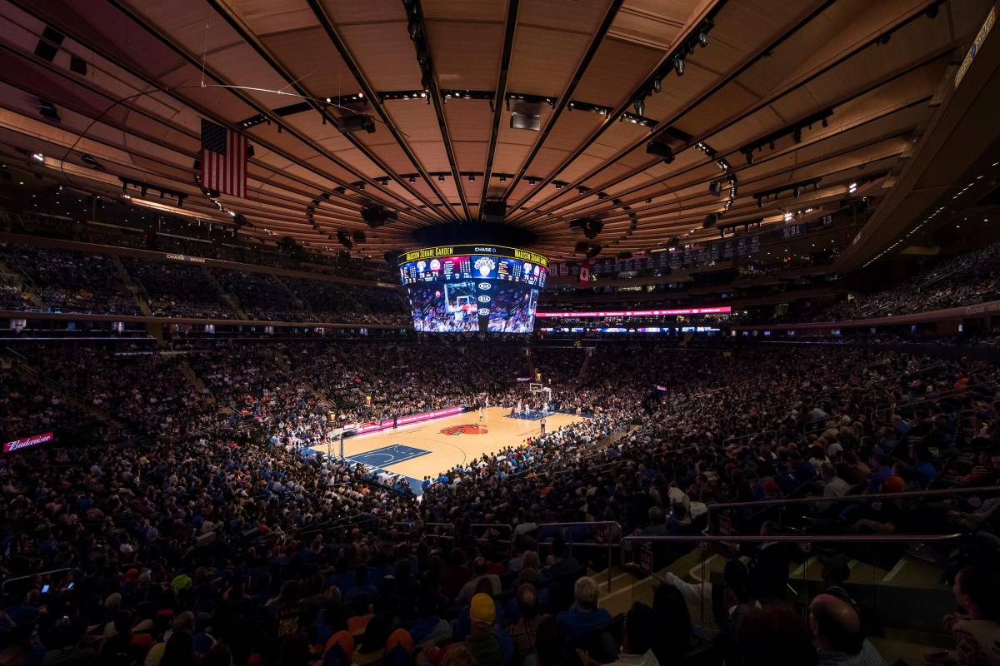

Student Fails Selfridge's Reading Quiz Despite Having Read Sparknotes
Senior Bentley Robinson hadn't done the reading homework for his AP Literature class with Mr. Selfridge, but he figured it wouldn't be a problem. He had read the sparknotes for the chapters, and he had read them carefully.
"If it's not important, it's not in the Sparknotes, and it's not on the reading quiz." Robinson told us. "Besides, Sparknotes is written in a way that you can understand even if you don't speak old English, unlike most of the reading we do."
As expected, as they entered the classroom they were told to separate their desks and take out a pencil. If they had taken notes on the reading, they could use them as well. Robinson stayed calm; he had understood what happened in the chapter. He got a little nervous upon reading the first question. What did Tom give to Daisy and where did she put it? But it only got worse from there. Each question was harder than the last, and by the end he understood that he had failed, despite having read the Sparknotes meticulously.
Mr. Selfridge refused to comment on any individual student's grades, although he did tell us that he has met Stevie Wonder.
NHS Administrator Hits Wall Dealing with Student Discipline
Northampton - During third lunch on Monday, Northampton High School Associate Principal Celeste Malvezzi was called to the cafeteria to help resolve a "situation."
"Officer Wallace had called for me over the radio," Malvezzi explained. "He described the situation as urgent. Upon arrival, I immediately noticed a group of three to six students, all attacking one student in the corner. I rushed towards the group, but that's all I remember."
Eyewitnesses tell us that Malvezzi started to sprint towards the group, but missed by several feet and hit a wall.
"It was badass." A senior who witnessed the incident told us. "Totally badass. I dropped my mandarin orange cup."
Malvezzi was examined by the school nurse, and is expected to make a full recovery.
Student who Found Dream Career as Deep Sea Alaskan Fisherman After Naviance Recommendation Shows Off Latest Catch
Sitka, Alaska - Tracy Hartman seemed like an average teenager who was going to have a typical life. Graduate High School, Graduate College, forget it all and get a meaningless job, telling herself that it's only temporary, until she's sixty five and collecting her 401k. But that's not how it went down.
It was her sophomore year when she was called down to the second floor computer lab for a guidance meeting. "They were having us use the career cluster finder on Naviance" she recalls. "I told the computer what I was interested in. I thought it was normal. It turns out it wasn't - I was the only one in the school that they recommended Deep Sea Fishing for. Like most teens I had never thought of that as a career."
Tracy throws the anchor off the side of the boat. The waves slapped at our ankles as we continued with the interview. I asked her what made this seem like a viable career.
"It didn't seem that way at first. It's hard for me to admit, but it didn't interest me at all. It wasn't until my guidance counselor strongly recommended that I don't pay attention to that career recommendation that it began to sound appealing." She droned on, but I couldn't hear her over the smell of dead fish. She got up, gesturing for me to follow. Reaching down into the stern well of the boat, she pulled out her latest catch - a 54 pound albacore tuna, crimson blood running down its gills, reminding me that not too long ago its heart was beating. Tracy shot me a smile. "This'll go for a hundred ten easy."
"For all those young folk out there," she starts in her acquired Alaskan accent, "Naviance might know you better than you know yourself. Don't shrug it off."
Vaillancourt Decides that it's Easier to Just Lock Vapers in Bathrooms
Northampton - Like many other high schools around the nation, Northampton High School is facing the issue of student vaping. Earlier in the year, the administration took the unprecedented step of bolting bathroom doors open. After intense student criticism, and realizing that students can still vape in the bathrooms, the administration decided to change course.
"We decided that instead of bolting the bathroom doors open, it's easier to just lock them closed. Trapping the vapers in there will help to distance other students and staff from the problem." Vaillancourt told us in an interview Friday afternoon. "We're also working to add a glass viewing window to the doors. We believe that public humiliation will be an effective method to reduce electronic cigarette usage in our educational environment."
"As for those who genuinely need to use the bathroom," Vaillancourt continued, "get your friends to stop vaping so we don't have to do this. But once you go into that bathroom, you're not coming out."
Superintendant John Provost declined to comment.
Camderson Rally Draws Record Numbers Despite Virus Fears
Madison Square Garden, New York - Juniors Amitai Cammy and Emmet Anderson, better known as Camderson, gained publicity when they were the first treasurers elected across class lines, winning the position of Freshman Class Treasurers. Since then, their chaotic rallies and impressive speeches have brought them to become even better known throughout New England. That's why it's no surprise that they have drawn impressive crowds to their rallies.

The rally that they had planned for this Saturday was different though. Due to fears of coronavirus, New York Governor Andrew Cuomo had banned all gatherings of more than five hundred people. That wasn't going to stop the dynamic duo or their energetic fans, though. Besides, they had campaigning to do given the upcoming elections.
By the time that our reporters arrived to the scene in Madison Square Garden, there were already an estimated 3000 people filling the stands, and about ten National Guard members trying to disperse the crowd. Anderson started by cracking a joke, bringing the duo into their routine. They were winning votes, and there was no stopping them.
It has just been reported that at least six atendees have tested positive for COVID-19, something that apparently doesn't bother Camderson.
"They knew what they were doing. The people decided that seeing us outweighed the potential consequences. I wouldn't disagree." Amitai told us. "This is about showing the pandemic who's in charge."
It is unclear which class treasurer position Camderson will be running for this Spring. They told us that they would rather keep that information private.
Funny Shriek in Hallway, Students Make Eye Contact, Laugh
Northampton - First period was going exactly as it always does in Ms. Locke's classroom. The students had finished their conversation in which they pretend to have done their homework, and Ms. Locke had moved to the board to lecture. She had barely started explaining u-substitution when a hair-raising shriek echoed in from the hallways. The students all made eye contact as if to say "Who would scream like that in the school? What just happened?" They then chuckled.
Class went on and the scream was soon forgotten. The school administration would not specify if any event had transpired that may have produced the disturbance.
Unlikely Relationship Between Sophomore and Lunch Lady, Administration Unsure how to Proceed
Trey Brockhart, sophomore bad boy, and Barb Dwyer, ex-convict turned lunch lady. An unlikely match in any regard. Brockhart relays their cliche story of love at first sight: "our eyes met over a pile of steamy mashed potatoes, and I know we both felt it. I took my lunch tray, and when I picked up my carrot cup, my Barby had left me a note with a time and meeting place." Barb picks up the story - "we bonded over our tattoos. I have a line of peas tattooed up my leg," she says as she lifts her apron to show us, "and he has an empty pea pod on his ankle. It's uncanny." Later, in private, Brockhart told us that his tattoo is actually a green bean pod, but he doesn't want to let down Barb.
"It's actually a very gentle, loving relationship," says Dwyer. This is what has tripped up the NHS administration so far - there is a significant (nearly 45 year) age gap, but not illegally so, and while there are rules preventing students and teachers from having romantic relationships, Dwyer claims that she falls outside the jurisdiction of that law.
"At first I was ready to call up Provost and take them to court", says Vaillancourt, "but they're just so adorable together." Malvezzi agrees as she conducts a photoshoot of the couple.